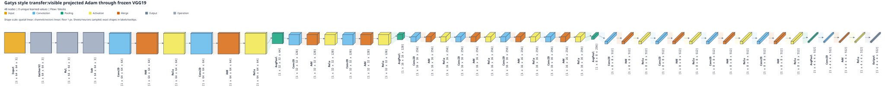
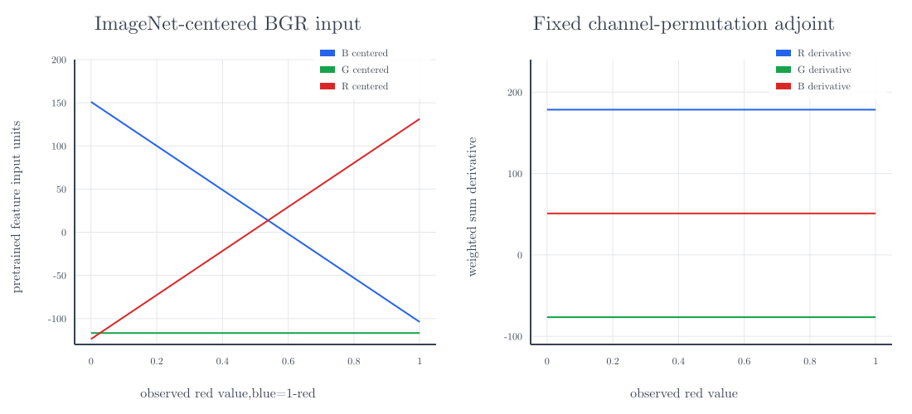
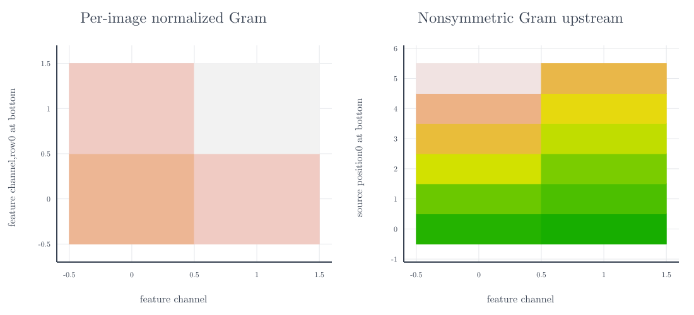
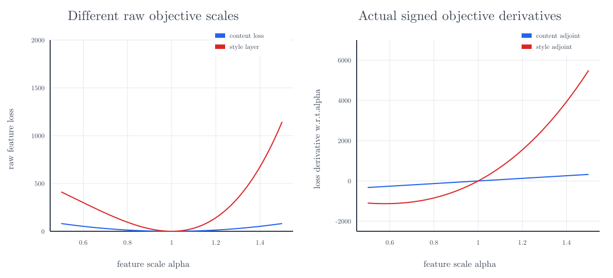
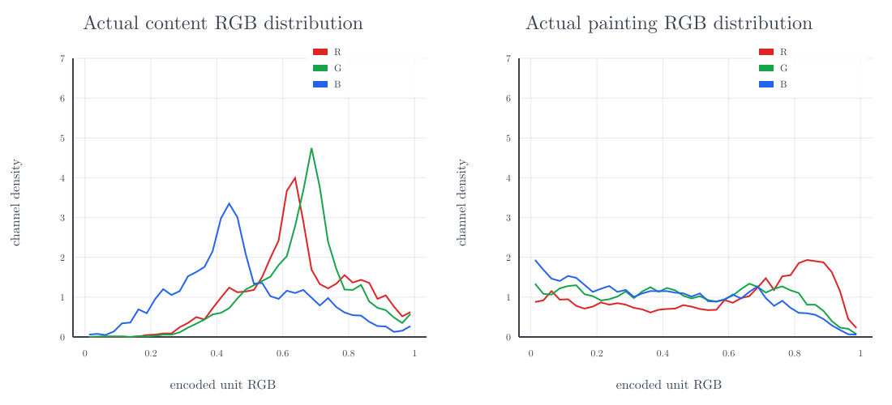
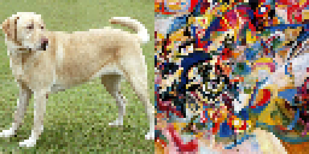
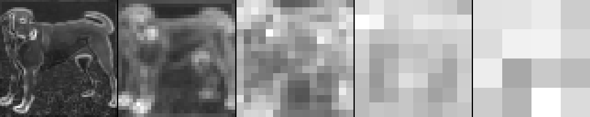
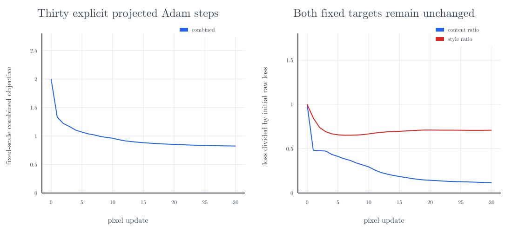
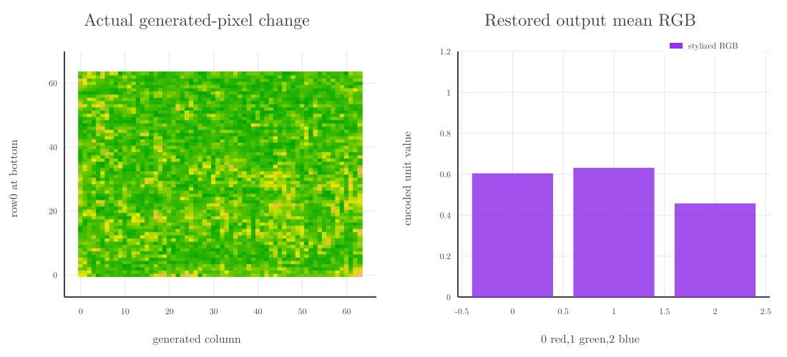
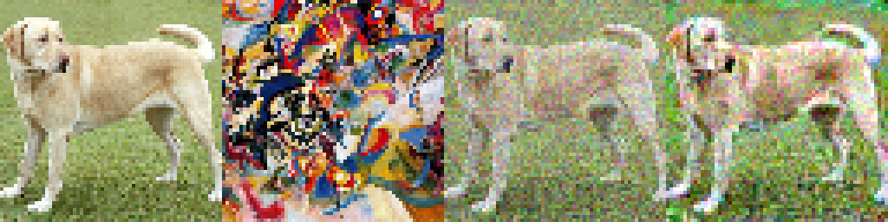

Gatys style transfer:visible projected Adam through frozen VGG19
Abstract
Use genuine pretrained Keras VGG19 weights and original Labrador/Kandinsky images. Explain fixed BGR preprocessing,spatially invariant Gram statistics and exact content/style coefficients. Show all30 projected tensor Adam steps on generated pixels,restore the best image,and prove frozen weights and feature targets remain unchanged. Independent Keras tests verify complete features,objectives and every image derivative.
Source example: examples/cpp/source/nn/1_convolutional_neural_networks/1.8_other_vision_tasks/gatys_style_transfer.cpp.
The method
The learnable object is the generated image,not VGG weights. Frozen source features define content and style objectives;an explicit tensor optimizer updates pixels and projects them into the unit interval. Reproducible official assets,independent gradient fixtures and actual source/output previews connect the mechanism to a measurable short experiment.
The concept diagram below is drawn by dm::graphics::Diagram. Its editable C++
source is the complete block below; regeneration uses the same datamunge toolchain
as the numerical examples. Exports consume the saved local SVG.
#include <dm/dm.hpp>
int main() {
std::filesystem::create_directories("build");
dm::graphics::Diagram diagram;
diagram.node("n0", {0.0, 0}, "Content and painting\nFrozen VGG19 features");
diagram.node("n1", {5.2, 0}, "Only pixels are leaves\nVisible projected Adam");
diagram.node("n2", {10.4, 0}, "Restore best image\nInspect actual changes");
diagram.edge("n0", "n1").edge("n1", "n2");
diagram.save_svg("build/gatys_style_transfer_concept.svg");
}
Executed tensor architecture
This geometry-only probe uses zero frozen VGG-19 constants and the style extractor's average pooling. The optimization below retains its actual pretrained features.
This figure executes the inference configuration shown in the code, using a zero-valued shape probe without fitting or loading a checkpoint. Named stage boundaries group whole subgraphs where available; other nodes retain functional-layer detail. Exact batch-inclusive shapes and reachable parameter totals come from the trace. Shared linear scales map spatial dimensions and channel counts to blocks; the one-pixel visibility floor is disclosed in the legend. Labels use compact monospace text, rotate counterclockwise and sit beside their own glyphs. Arrows flow left to right; wide diagrams scroll at native size on the website.
#include <dm/dm.hpp>
int main() {
namespace n = dm::nn;
namespace m = n::models;
n::set_num_threads(2);
std::filesystem::create_directories("build");
m::TensorMap weights;
int input = 3;
for (int b = 0; b < 5; ++b)
for (int l = 0; l < m::FrozenVgg19::Depths[b]; ++l) {
const auto name = "block" + std::to_string(b + 1) + "_conv" + std::to_string(l + 1);
const auto width = m::FrozenVgg19::Widths[b];
weights.emplace(name + "_W", n::zeros({3, 3, input, width}));
weights.emplace(name + "_b", n::zeros({width}));
input = width;
}
const m::FrozenVgg19 vgg(weights);
n::Module architecture_model(
[&](const n::Tensor& image) { return vgg.Extract(image).style.back(); },
"Gatys style transfer:visible projected Adam through frozen VGG19");
n::ModelPlotOptions options;
options.style = n::ModelPlotStyle::Flow;
options.detail = n::ModelPlotDetail::Blocks;
options.labels = {.type = n::ModelPlotLabel::NameAndShape, .size = 12, .wrap = 24};
options.spacing = {.layer = 24, .lane = 12, .label = 8, .margin = 20};
options.sizing.spatial_size = 96;
options.sizing.channel_size = 42;
options.sizing.minimum_extent = 1;
options.opacity = .8;
const auto diagram = architecture_model.plot(n::zeros({1, 64, 64, 3}), options);
diagram.save_svg("build/gatys_style_transfer_architecture.svg");
std::print(
"{} displayed nodes; {} reachable learned values.\n",
diagram.nodes().size(),
diagram.parameter_count());
}48 displayed nodes; 0 reachable learned values.

Fixed ImageNet preprocessing remains differentiable
The pretrained Keras convolution weights expect encoded RGB unit values reordered to BGR,multiplied by255,and shifted by103.939/116.779/123.68. The transformation has a channel-permutation derivative scaled by255. Do not fit new means or convert these pixels to gamma-linear RGB. This preprocessing matches the imported weights;it is not a learned optimizer step.
#include <dm/dm.hpp>
int main() {
namespace n = dm::nn;
namespace m = n::models;
const auto red = n::arange(0., 1.0001, .01, n::DType::Float64), zero = n::zeros_like(red),
rgb = n::stack({red, zero, 1. - red}, 1).reshape({1, 1, -1, 3}).requires_grad_();
const auto bgr = m::VggImageNetInput(rgb),
weights = n::from_vector(std::vector<double>{.2, -.3, .7}, {3}),
g = n::grad(n::sum(bgr * weights), {rgb})[0];
std::print("RGB adjoint at first pixel:{};expected[178.5,-76.5,51].\n",
n::slice_axis(g, 2, 0, 1));
auto a = dm::graphics::RPlot::create(), b = dm::graphics::RPlot::create();
const std::array<dm::graphics::RGB, 3> colors = {
{{37, 99, 235}, {22, 163, 74}, {220, 38, 38}}};
for (int c = 0; c < 3; ++c) {
a.lines(red.to_vector<double>(), n::select(bgr, 3, c).to_vector<double>(),
std::string("BGR")[c] + std::string(" centered"), colors[c]);
b.lines(red.to_vector<double>(), n::select(g, 3, c).to_vector<double>(),
std::string("RGB")[c] + std::string(" derivative"), colors[c]);
}
a.title("ImageNet-centered BGR input")
.x_label("observed red value,blue=1-red")
.y_label("pretrained feature input units")
.y_limits(-130, 200);
b.title("Fixed channel-permutation adjoint")
.x_label("observed red value")
.y_label("weighted sum derivative")
.y_limits(-110, 240);
auto layout = dm::graphics::RLayout::create(1, 2);
layout.add(a).add(b).size(1100, 500).fit_panels().save_svg(
"build/gatys_style_transfer_preprocess.svg");
}RGB adjoint at first pixel:float64[1, 1, 1, 3] [[[[178.5, -76.5, 51]]]];expected[178.5,-76.5,51].

Gram statistics discard spatial order within each image
Flatten H*W positions to F[M,C],then compute G=F^T*F/M separately per image. A spatial permutation changes content features but leaves this channel Gram unchanged. A Gram matrix is an uncentered channel correlation summary;it does not specify where a painted structure should appear. No batch images mix.
#include <dm/dm.hpp>
int main() {
namespace n = dm::nn;
namespace m = n::models;
const auto features =
n::arange(1, 13, 1, n::DType::Float64).reshape({1, 2, 3, 2}).requires_grad_(),
permuted = n::reverse(features, {1, 2});
const auto gram = m::StyleGram(features), other = m::StyleGram(permuted),
up = n::tensor({1., -2., 3., .5}, {1, 2, 2}).to(n::DType::Float64),
g = n::grad(n::sum(gram * up), {features})[0];
std::print("Spatial permutation:Gram maximum difference {:.3g};content loss {:.6f};all12 "
"adjoints finite:{}\n",
n::max(n::abs(gram - other)).item(),
m::GatysContentLoss(features, permuted).item(),
n::all(n::is_finite(g)).item<bool>());
auto a = n::plot_tensor_map(n::reverse(gram.reshape({2, 2}), {0}), 0, 61),
b = n::plot_tensor_map(n::reverse(g.reshape({6, 2}), {0}), 0, 6);
a.title("Per-image normalized Gram")
.x_label("feature channel")
.y_label("feature channel,row0 at bottom");
b.title("Nonsymmetric Gram upstream")
.x_label("feature channel")
.y_label("source position0 at bottom");
auto layout = dm::graphics::RLayout::create(1, 2);
layout.add(a).add(b).size(1100, 500).fit_panels().save_svg(
"build/gatys_style_transfer_gram.svg");
}Spatial permutation:Gram maximum difference 0;content loss 280.000000;all12 adjoints finite:true

Content and style use different normalizations
Content is.5*sum((F-P)2),retaining spatial layout. A style layer is .25*mean((G-A)2) with M-normalized Grams,equivalent to the original 1/(4*C*C*M*M) coefficient on unnormalized Grams. Five layers receive equal.2 weights. The following scale sweep shows the raw single-layer objectives and their actual tensor derivatives;it does not fit a surrogate model.
#include <dm/dm.hpp>
int main() {
namespace n = dm::nn;
namespace m = n::models;
const auto alpha = n::arange(.5, 1.5001, .01, n::DType::Float64).requires_grad_(),
base = n::arange(1, 13, 1, n::DType::Float64).reshape({1, 2, 3, 2}),
generated = alpha.reshape({-1, 1, 1, 1}) * base, target = m::StyleGram(base);
const auto style = .25 * n::mean(n::square(m::StyleGram(generated) - target), {1, 2}),
content = .5 * n::sum(n::square(generated - base), {1, 2, 3}),
sg = n::grad(n::sum(style), {alpha})[0];
const auto content_gradient = n::sum(n::square(base)).item() * (alpha.detach() - 1.);
auto a = dm::graphics::RPlot::create(), b = dm::graphics::RPlot::create();
a.lines(alpha.detach().to_vector<double>(), content.to_vector<double>(), "content loss",
{37, 99, 235})
.lines(alpha.detach().to_vector<double>(), style.to_vector<double>(), "style layer",
{220, 38, 38})
.title("Different raw objective scales")
.x_label("feature scale alpha")
.y_label("raw feature loss")
.y_limits(0, 2000);
b.lines(alpha.detach().to_vector<double>(), content_gradient.to_vector<double>(),
"content adjoint", {37, 99, 235})
.lines(alpha.detach().to_vector<double>(), sg.to_vector<double>(), "style adjoint",
{220, 38, 38})
.title("Actual signed objective derivatives")
.x_label("feature scale alpha")
.y_label("loss derivative w.r.t.alpha")
.y_limits(-2500, 7000);
std::print("Exact match alpha1 gives content/style0. Separate initial scaling balances "
"fixed losses in the real pixel fit.\n");
auto layout = dm::graphics::RLayout::create(1, 2);
layout.add(a).add(b).size(1100, 500).fit_panels().save_svg(
"build/gatys_style_transfer_losses.svg");
}Exact match alpha1 gives content/style0. Separate initial scaling balances fixed losses in the real pixel fit.

Genuine source images and pretrained weights
Use the official Keras no-top VGG19 HDF5 and the original TensorFlow tutorial Labrador/Kandinsky JPEGs. The preparation script verifies pinned byte sizes and SHA256 fingerprints,then decodes all16 convolution pairs without modifying weights. The separate pinned TensorFlow CPU environment is used only to make independent Keras feature/objective/every-image-gradient test fixtures.
#include <dm/dm.hpp>
int main() {
const std::filesystem::path cache = dm::datasets::data_home();
dm::datasets::prepare_example_data("style", (cache / "style_transfer").string());
}The C++ preparation helper requires HDF5 C++ and datamunge via pkg-config. Report images decode from the original JPEG,center-square crop with integer floor offsets,legacy bilinear resize to64x64,and tensor RGB/255. They are two source images for an optimization problem,not a held-out learning benchmark. The content photo is Elf’s Yellow Labrador Looking,CC BY-SA3.0;the style is Wassily Kandinsky’s Composition VII(1913),from the tutorial’s source mirror.
#include <dm/dm.hpp>
int main() {
namespace n = dm::nn;
namespace m = n::models;
n::set_num_threads(2);
std::filesystem::path cache;
if (const auto *p = std::getenv("DATAMUNGE_DATA_DIR"))
cache = p;
else if (const auto *p = std::getenv("XDG_CACHE_HOME"))
cache = std::filesystem::path(p) / "datamunge/datasets";
else
cache = std::filesystem::path(std::getenv("HOME")) / ".cache/datamunge/datasets";
std::filesystem::path assets = cache / "style_transfer";
if (const auto *p = std::getenv("DATAMUNGE_STYLE_DIR"))
assets = p;
else
dm::datasets::prepare_example_data("style", assets.string());
const auto content = m::LoadStyleImage(assets / "content.jpg", 64),
style = m::LoadStyleImage(assets / "style.jpg", 64);
std::filesystem::create_directories("figures");
n::save_image_grid(n::concat({content, style}, 2), "build/gatys_style_transfer_inputs.png",
1, 0, 1, 0, 0, 4);
const auto edges = n::arange(0., 1.0001, .025, n::DType::Float64),
left = n::slice_axis(edges, 0, 0, 40), right = n::slice_axis(edges, 0, 1, 41),
centers = (left + right) / 2.;
auto a = dm::graphics::RPlot::create(), b = dm::graphics::RPlot::create();
const std::array<dm::graphics::RGB, 3> colors = {
{{220, 38, 38}, {22, 163, 74}, {37, 99, 235}}};
for (int c = 0; c < 3; ++c) {
for (int image = 0; image < 2; ++image) {
const auto values = n::select(image == 0 ? content : style, 3, c)
.to(n::DType::Float64)
.reshape({-1, 1}),
hits = n::logical_and(n::greater_equal(values, left.reshape({1, 40})),
n::less(values, right.reshape({1, 40}))),
density = n::sum(hits.to(n::DType::Float64), {0}) / (values.size(0) * .025);
auto &p = image == 0 ? a : b;
p.lines(centers.to_vector<double>(), density.to_vector<double>(),
std::string(1, std::string("RGB")[c]), colors[c]);
}
}
a.title("Actual content RGB distribution")
.x_label("encoded unit RGB")
.y_label("channel density")
.y_limits(0, 7);
b.title("Actual painting RGB distribution")
.x_label("encoded unit RGB")
.y_label("channel density")
.y_limits(0, 7);
auto layout = dm::graphics::RLayout::create(1, 2);
layout.add(a).add(b).size(1100, 500).fit_panels().save_svg(
"build/gatys_style_transfer_data.svg");
std::print("Two original JPEGs center-cropped/resized to64x64;no synthetic replacement or "
"learned preprocessing.\n");
}Two original JPEGs center-cropped/resized to64x64;no synthetic replacement or learned preprocessing.


Full frozen features and an independent gradient oracle
The archive contains20,024,384 Float32 values in32 tensors. The selected extractor executes12,944,960 values through block5_conv1,with average pools instead of the ImageNet classification model’s max pools. Content is conv4_2; style is conv1_1 through conv5_1. Every imported constant is a detached clone outside the generated image’s optimizer. Native tests compare all six feature arrays,all objectives and every input derivative with independent Keras. The preview shows channelwise feature RMS,not learned attention or saliency.
#include <dm/dm.hpp>
int main() {
namespace n = dm::nn;
namespace m = n::models;
n::set_num_threads(2);
std::filesystem::path cache;
if (const auto *p = std::getenv("DATAMUNGE_DATA_DIR"))
cache = p;
else if (const auto *p = std::getenv("XDG_CACHE_HOME"))
cache = std::filesystem::path(p) / "datamunge/datasets";
else
cache = std::filesystem::path(std::getenv("HOME")) / ".cache/datamunge/datasets";
std::filesystem::path assets = cache / "style_transfer";
if (const auto *p = std::getenv("DATAMUNGE_STYLE_DIR"))
assets = p;
else
dm::datasets::prepare_example_data("style", assets.string());
const auto weights = m::LoadTensorMap((assets / "vgg19.npz").string());
m::FrozenVgg19 vgg(weights);
const auto content = m::LoadStyleImage(assets / "content.jpg", 64);
n::NoGradGuard guard;
const auto features = vgg.Extract(content);
std::int64_t scalars = 0;
for (const auto &[name, value] : weights)
scalars += value.numel();
std::print("{} genuine imported tensors,{} scalars;all constants require_grad=false.\n| "
"layer | H | W | channels | RMS |\n|---|---:|---:|---:|---:|\n",
weights.size(), scalars);
std::vector<n::Tensor> maps;
for (int i = 0; i < 5; ++i) {
const auto f = features.style[i];
std::print("| conv{}_1 | {} | {} | {} | {:.6f} |\n", i + 1, f.size(1), f.size(2),
f.size(3), n::sqrt(n::mean(f * f)).item());
const auto rms = n::sqrt(n::mean(n::square(f), {3}, true));
const auto scaled = rms / n::maximum(n::max(rms), n::full({}, 1e-12));
const auto display = n::resize_nearest(scaled, {64, 64});
maps.push_back(n::concat({display, display, display}, 3));
}
std::print("| conv4_2 content | {} | {} | {} | {:.6f} |\n", features.content.size(1),
features.content.size(2), features.content.size(3),
n::sqrt(n::mean(n::square(features.content))).item());
vgg.CheckFrozen();
std::filesystem::create_directories("build");
n::save_image_grid(n::concat(maps, 0), "build/gatys_style_transfer_features.png", 5, 0, 1, 2,
0, 3);
}32 genuine imported tensors,20024384 scalars;all constants require_grad=false.
| layer | H | W | channels | RMS |
|---|---|---|---|---|
| conv1_1 | 64 | 64 | 64 | 44.971336 |
| conv2_1 | 32 | 32 | 128 | 175.079269 |
| conv3_1 | 16 | 16 | 256 | 138.021240 |
| conv4_1 | 8 | 8 | 512 | 373.334625 |
| conv5_1 | 4 | 4 | 512 | 36.690460 |
| conv4_2 content | 8 | 8 | 512 | 325.974060 |

Optimize generated pixels with an explicit projected Adam loop
Only the12,288 generated64x64 RGB values are optimizer leaves. Initialize as.75*content+.25*seeded uniform noise;host code draws RNG samples only, while tensor arithmetic mixes pixels. Cache fixed content features and painting Grams without recording gradients. Balance raw losses with their initial Float32 denominators,then hold these denominators and targets fixed.
Show all30 Adam(.03) updates. After each step,project the same image leaf to [0,1] in place. Select and restore the minimum combined objective over steps0..30. Check that every pretrained value remains unchanged,targets remain unchanged, restoration matches the selected objective,and image gradients remain finite. This example optimizes one output image using source feature targets;it is not a feed-forward model trained for target-free stylization of new content.
#include <dm/dm.hpp>
int main() {
namespace n = dm::nn;
namespace m = n::models;
n::set_num_threads(2);
std::filesystem::path cache;
if (const auto *p = std::getenv("DATAMUNGE_DATA_DIR"))
cache = p;
else if (const auto *p = std::getenv("XDG_CACHE_HOME"))
cache = std::filesystem::path(p) / "datamunge/datasets";
else
cache = std::filesystem::path(std::getenv("HOME")) / ".cache/datamunge/datasets";
std::filesystem::path assets = cache / "style_transfer";
if (const auto *p = std::getenv("DATAMUNGE_STYLE_DIR"))
assets = p;
else
dm::datasets::prepare_example_data("style", assets.string());
const auto weights = m::LoadTensorMap((assets / "vgg19.npz").string());
m::FrozenVgg19 vgg(weights);
const auto content = m::LoadStyleImage(assets / "content.jpg", 64),
style = m::LoadStyleImage(assets / "style.jpg", 64);
std::mt19937 rng(17);
std::uniform_real_distribution<float> draw(0, 1);
std::vector<float> samples(content.numel());
for (auto &sample : samples)
sample = draw(rng);
const auto initial = .75 * content + .25 * n::from_vector(samples, content.shape());
auto image = initial.clone().requires_grad_();
n::Tensor content_target;
std::array<n::Tensor, 5> targets;
{
n::NoGradGuard guard;
content_target = vgg.Extract(content).content;
const auto s = vgg.Extract(style);
for (int i = 0; i < 5; ++i)
targets[i] = m::StyleGram(s.style[i]);
}
const auto target_snapshot = content_target.clone();
std::array<n::Tensor, 5> style_snapshot;
for (int i = 0; i < 5; ++i)
style_snapshot[i] = targets[i].clone();
auto raw = [&] {
const auto f = vgg.Extract(image);
return std::array<n::Tensor, 2>{m::GatysContentLoss(f.content, content_target),
m::GatysStyleLoss(f.style, targets)};
};
double initial_content = 0, initial_style = 0;
{
n::NoGradGuard guard;
const auto r = raw();
initial_content = r[0].item();
initial_style = r[1].item();
}
if (initial_content <= 1e-12 || initial_style <= 1e-12)
return 1;
const double content_scale = double(float(initial_content)),
style_scale = double(float(initial_style));
auto objective = [&] {
const auto r = raw();
return std::array<n::Tensor, 3>{r[0] / content_scale + r[1] / style_scale, r[0], r[1]};
};
n::OptimizerConfig config;
config.kind = n::OptimizerKind::Adam;
n::Optimizer adam(std::vector<n::Tensor>{image}, .03, config);
std::filesystem::create_directories("build");
std::filesystem::create_directories("figures");
double best = INFINITY;
int selected = -1;
std::vector<double> steps, total, relative_content, relative_style;
std::print("Only{} pixel scalars optimized;VGG32 tensors/20024384 values frozen.\nFixed "
"initial raw content/style {:.6f}/{:.6f}.\n| step | objective | relative content "
"| relative style |\n|---:|---:|---:|---:|\n",
image.numel(), initial_content, initial_style);
for (int step = 0; step <= 30; ++step) {
if (step) {
const auto losses = objective();
adam.step(n::grad(losses[0], {image}));
n::NoGradGuard guard;
image.copy_(n::clip(image, 0., 1.));
}
n::NoGradGuard guard;
const auto losses = objective();
const double value = losses[0].item();
if (!std::isfinite(value))
return 1;
steps.push_back(step);
total.push_back(value);
relative_content.push_back(losses[1].item() / initial_content);
relative_style.push_back(losses[2].item() / initial_style);
if (value < best) {
best = value;
selected = step;
n::save_npz("build/gatys_style_transfer_best.npz", {{"image/pixels", image.detach()}});
}
std::print("| {} | {:.6f} | {:.6f} | {:.6f} |\n", step, value, relative_content.back(),
relative_style.back());
}
{
n::NoGradGuard guard;
image.copy_(n::load_npz("build/gatys_style_transfer_best.npz").at(0).second);
}
const auto restored = objective();
const double gradient = n::sqrt(n::sum(n::square(n::grad(restored[0], {image})[0]))).item(),
change = n::mean(n::abs(image.detach() - initial)).item();
if (std::abs(restored[0].item() - best) > 1e-6 || best >= total.front() - 1e-3 ||
restored[2].item() >= initial_style * .999 || !std::isfinite(gradient) ||
gradient <= 0 || change <= 1e-4)
return 1;
vgg.CheckFrozen();
if (!n::all(n::equal(content_target, target_snapshot)).item<bool>())
return 1;
for (int i = 0; i < 5; ++i)
if (!n::all(n::equal(targets[i], style_snapshot[i])).item<bool>())
return 1;
const auto result = image.detach().clone();
std::print(
"Selected step{},restored objective {:.6f};relative content/style {:.6f}/{:.6f};image "
"gradient norm {:.6f};mean pixel change {:.6f}.\nAll32 frozen weight tensors and six "
"feature targets unchanged;checkpoint contains generated image only.\n",
selected, best, restored[1].item() / initial_content, restored[2].item() / initial_style,
gradient, change);
n::save_image_grid(n::concat({content, style, initial, result}, 2),
"build/gatys_style_transfer_comparison.png", 1, 0, 1, 0, 0, 4);
n::save_npz(
"build/gatys_style_transfer_outputs.npz",
{{"content", content}, {"style", style}, {"initial", initial}, {"stylized", result}});
const auto changed = n::mean(n::abs(result - initial), {3}), color = n::mean(result, {1, 2});
auto a = n::plot_tensor_map(n::reverse(changed.reshape({64, 64}), {0}), 0, .4),
b = dm::graphics::RPlot::create();
a.title("Actual generated-pixel change")
.x_label("generated column")
.y_label("row0 at bottom");
b.bars({0., 1., 2.}, color.to_vector<double>(), "stylized RGB", {147, 51, 234})
.title("Restored output mean RGB")
.x_label("0 red,1 green,2 blue")
.y_label("encoded unit value")
.y_limits(0, 1.2);
auto diagnostic = dm::graphics::RLayout::create(1, 2);
diagnostic.add(a).add(b).size(1100, 500).fit_panels().save_svg(
"build/gatys_style_transfer_change.svg");
std::filesystem::copy_file("build/gatys_style_transfer_change.svg",
"figures/gatys_style_transfer_change.svg",
std::filesystem::copy_options::overwrite_existing);
a = dm::graphics::RPlot::create();
b = dm::graphics::RPlot::create();
a.lines(steps, total, "combined", {37, 99, 235})
.title("Thirty explicit projected Adam steps")
.x_label("pixel update")
.y_label("fixed-scale combined objective")
.y_limits(0, 2.8);
b.lines(steps, relative_content, "content ratio", {37, 99, 235})
.lines(steps, relative_style, "style ratio", {220, 38, 38})
.title("Both fixed targets remain unchanged")
.x_label("pixel update")
.y_label("loss divided by initial raw loss")
.y_limits(0, 1.8);
auto curves = dm::graphics::RLayout::create(1, 2);
curves.add(a).add(b).size(1100, 500).fit_panels().save_svg(
"build/gatys_style_transfer_training.svg");
}Only12288 pixel scalars optimized;VGG32 tensors/20024384 values frozen. Fixed initial raw content/style 263952848.000000/973494208.000000.
| step | objective | relative content | relative style |
|---|---|---|---|
| 0 | 2.000000 | 1.000000 | 1.000000 |
| 1 | 1.329745 | 0.482832 | 0.846912 |
| 2 | 1.219039 | 0.477410 | 0.741629 |
| 3 | 1.165623 | 0.473546 | 0.692077 |
| 4 | 1.103668 | 0.435844 | 0.667824 |
| 5 | 1.069081 | 0.412607 | 0.656474 |
| 6 | 1.038924 | 0.387209 | 0.651715 |
| 7 | 1.019440 | 0.367569 | 0.651870 |
| 8 | 0.992720 | 0.338957 | 0.653763 |
| 9 | 0.975719 | 0.317576 | 0.658143 |
| 10 | 0.961267 | 0.294883 | 0.666384 |
| 11 | 0.935988 | 0.259791 | 0.676196 |
| 12 | 0.915533 | 0.231240 | 0.684293 |
| 13 | 0.903461 | 0.213647 | 0.689814 |
| 14 | 0.891826 | 0.198656 | 0.693170 |
| 15 | 0.882362 | 0.186325 | 0.696037 |
| 16 | 0.875252 | 0.175484 | 0.699767 |
| 17 | 0.868185 | 0.164113 | 0.704072 |
| 18 | 0.862052 | 0.154266 | 0.707786 |
| 19 | 0.857644 | 0.147585 | 0.710059 |
| 20 | 0.854047 | 0.143791 | 0.710255 |
| 21 | 0.849891 | 0.140368 | 0.709522 |
| 22 | 0.844343 | 0.135334 | 0.709009 |
| 23 | 0.840261 | 0.131365 | 0.708896 |
| 24 | 0.837990 | 0.129318 | 0.708672 |
| 25 | 0.835586 | 0.127424 | 0.708162 |
| 26 | 0.833071 | 0.125689 | 0.707383 |
| 27 | 0.830149 | 0.123122 | 0.707027 |
| 28 | 0.827828 | 0.120763 | 0.707065 |
| 29 | 0.826499 | 0.118969 | 0.707530 |
| 30 | 0.824905 | 0.116278 | 0.708628 |
Selected step30,restored objective 0.824905;relative content/style 0.116278/0.708628;image gradient norm 0.052108;mean pixel change 0.085390. All32 frozen weight tensors and six feature targets unchanged;checkpoint contains generated image only.



The selected final step reduces the combined objective from 2.0 to 0.824905. Relative content and style losses reach 0.116278 and 0.708628. Mean absolute pixel change is 0.085390 in unit RGB, with a remaining image-gradient norm of 0.052108.
Feature-loss reduction demonstrates the stated optimization mechanism. Visual style quality is subjective,and one content/style pair supplies no held-out generalization score. Average pooling,initial balancing,small image size and projected Adam are explicit source choices rather than a claim of exact original-paper rescaling or optimizer reproduction.
Regenerate adjacent views from this run
#include <dm/dm.hpp>
int main(){std::filesystem::copy_file("build/gatys_style_transfer_change.svg","build/export_gatys_style_transfer_change.svg",std::filesystem::copy_options::overwrite_existing);}#include <dm/dm.hpp>
int main(){std::filesystem::copy_file("build/gatys_style_transfer_comparison.png","build/export_gatys_style_transfer_comparison.png",std::filesystem::copy_options::overwrite_existing);}#include <dm/dm.hpp>
int main(){std::filesystem::copy_file("build/gatys_style_transfer_inputs.png","build/export_gatys_style_transfer_inputs.png",std::filesystem::copy_options::overwrite_existing);}Conclusion
Exact Gram/content checks and independent Keras every-pixel derivatives establish the frozen-feature objective. Thirty visible projected tensor Adam steps then produce a real image-only checkpoint. Unchanged pretrained weights/targets and complete source/result previews keep the short optimization claim concrete.
References
- [Gatys,Ecker and Bethge,A Neural Algorithm of Artistic Style](https://arxiv.org/abs/1508.06576).
- [Simonyan and Zisserman,Very Deep Convolutional Networks for Large-Scale Image Recognition](https://arxiv.org/abs/1409.1556).
- [Official Keras VGG19 implementation and weight URLs](https://github.com/keras-team/keras/blob/master/keras/src/applications/vgg19.py).
- [TensorFlow style-transfer tutorial,original images and attribution](https://www.tensorflow.org/tutorials/generative/style_transfer).
- [Elf,Yellow Labrador Looking,CC BY-SA3.0](https://commons.wikimedia.org/wiki/File:YellowLabradorLooking_new.jpg).